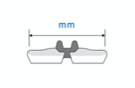
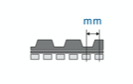
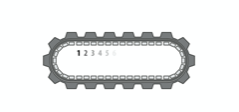

Rubber caterpillars (H2)
Welcome to us at Nordisk Maskin, we offer high-quality rubber caterpillars / crawler tracks for excavators, mini dumpers, etc. at the best prices on the market. We sell and stock rubber caterpillar tracks for most machine manufacturers.
Contact us for all your machine needs - we will help you find the right one.
Phone: 0589 - 10232 Mail: info@nordiskmaskin.se
How do I know which rubber caterpillars / caterpillars I have?
Are you looking for new rubber caterpillars / crawler tracks for your excavator or mini excavator? Here is a quick and easy guide to help you identify the machine's rubber caterpillars.
To get the right replacement rubber band, you need to know the following information:
- Bandwidth (mm)
- CC between the links (mm)
- Number of links (pcs)
You can usually find these dimensions on the machine's existing rubber caterpillars / caterpillar tracks, the caterpillar track must be stamped along the outside of the rubber (example 230x33x96) see picture below.
If this information is not available, take a tape measure and follow the steps below.
- Measure the total width of the rubber water: 
- Measure the distance from the center of a link to the center of the next link (in millimeters) the so-called CC dimension between the links: 
- Count the number of links. Select one of the links and then count each link around the total circumference of the rubber band until you return to the link that was selected. Links are also known as drive heels or teeth. 
As soon as you have all the information as above, you have the right conditions to find the right belt for your machine. Contact us to get a quote on rubber caterpillar tracks / caterpillar tracks at the best price on the market. Or fill out the form below.
Delivery address
How to replace rubber caterpillars / caterpillars?
Turning off and installing new rubber caterpillars / crawler tracks on an excavator, mini excavator, mini loader or other vehicle is a fairly simple operation that can easily be done in less than half an hour (with the habit inside). If this is your first time, it may take longer depending on your mechanical skills. We recommend that you are 2 people to facilitate the shift.
Remember that you both wear proper safety clothing and also make sure that the work area is secured and prevent others from entering the work area.